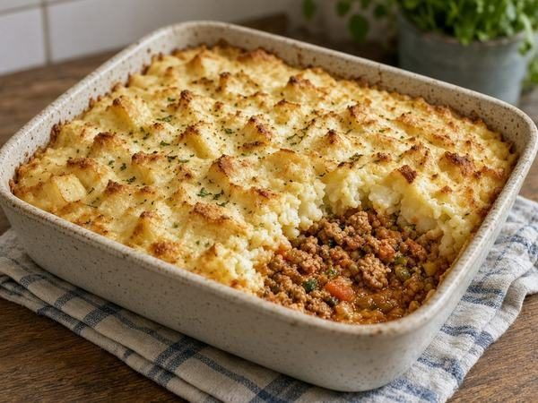

Friday 20 November
Lemon chicken traybake from the fridge
Delivery 16:00–20:00. Salmon straight into the freezer.
Week 4820–28 November
Friday 20 November
Delivery 16:00–20:00. Salmon straight into the freezer.
Saturday 21 November
Read the meat labels before Sunday's order of work.

JudeSet Jude's plain chicken and mash aside before any salted butter or pepper.

Football night: reheat only. Out of the freezer on Sunday night.

JudeTake Jude's chicken and a few chickpeas out before any spice. Leave out the houmous and the Peppadews.

JudeCut Jude's piece of salmon and bake it plain, before the harissa.

JudeLift Jude's meatballs and a spoon of sauce out before you season.

JudeTake Jude's plain pork, carrot and broth out before the gochujang.
Saturday 28 November
The spare shepherd's pie stays frozen as the buffer.
Finished
Say how the dinners were, below. The next week's link comes by email on Tuesday, and the home page opens it.
Swapped
Extra Large Whole Chicken 2.15kg came instead of Corn Fed Free Range Chicken 1.5kg - 2kg. The dinner can go ahead. It is heavier, so allow longer and check it is cooked through.
Handed back
No Peppadew roasted red peppers. Roasted Red Peppers (295g) was offered and handed back. Pick it up locally, or use something already in.
Handed back
No tagliatelle. Fusilli (500g) was offered and handed back. Pick it up locally, or use something already in.
20Fri
Leftovers, already in
Delivery 16:00–20:00. Salmon straight into the freezer.
21Sat
Leftovers, already in
Read the meat labels before Sunday's order of work.
About 1 hr 45 min (40 min hands-on). Serves 2 + Jude, plus leftovers.
JudeBefore step 6: Set Jude's plain chicken and mash aside before any salted butter or pepper.
Finely chopped chicken, no skin, stirred through plain mash with a little milk or unsalted stock. Soft carrot and tenderstem florets as finger food.
Leftover chicken: fridge, eat by Tuesday. Stock: fridge 3 days or freezer 3 months.
23Mon
From the freezer, football night
Football night: reheat only. Out of the freezer on Sunday night.
Out of the freezer: Sunday 22 November, ready for Monday 23 November.
24Tue
25 min, leftovers night

25 min. Serves 2 + Jude.
JudeBefore step 1: Take Jude's chicken and a few chickpeas out before any spice. Leave out the houmous and the Peppadews.
Greek yoghurt stirred through plain mash, cucumber sticks and a strip of flatbread. A little very finely shredded plain chicken in the mash if he'll take it. Leave out the houmous and the Peppadews.
Eat the same night. Reheat chicken only once, until piping hot.
30 min. Serves 2 + Jude.
JudeBefore step 3: Cut Jude's piece of salmon and bake it plain, before the harissa.
Plain salmon, skin off and every bone checked, flaked into plain crushed potato with a little yoghurt or milk. No harissa and no pepper.
Eat the same night. Do not refreeze salmon that has been defrosted.
26Thu
Sunday: 30 min to roll and bake, made on Sunday

Sunday: 30 min to roll and bake. Cook day: 20 min.. Serves 2 + Jude.
JudeBefore step 5: Lift Jude's meatballs and a spoon of sauce out before you season.
2–3 plain soft meatballs, mashed or quartered, with a spoon of unseasoned sauce and short pieces of soft tagliatelle.
Cooked meatballs: freezer 3 months. Once defrosted, eat within 24 hours.
Sunday: 15 min hands-on, 1 hr 15 min simmer. Cook day: 40 min including noodles.. Serves 2 + Jude.
JudeBefore step 3: Take Jude's plain pork, carrot and broth out before the gochujang.
Plain pork, shredded very fine or mashed into a little broth, with soft short noodle pieces and soft carrot.
Stew base: freezer 3 months; once defrosted, fridge up to 24 hours.
28Sat
From the freezer
The spare shepherd's pie stays frozen as the buffer.
Out of the freezer: Friday 27 November, ready for Saturday 28 November.
9 dinners: 5 to cook, 2 leftover nights, 2 from the freezer.
One tap each. It's saved straight away, and Larder adds it to the cookbook after the Sunday review. A rating never changes a recipe by itself.
Lemon chicken traybake from the fridge Fri 20 Nov
Filled pasta from the fridge Sat 21 Nov
Roast chicken Sun 22 Nov
Shepherd's pie Mon 23 Nov
Chicken shawarma bowls Tue 24 Nov
Harissa salmon Wed 25 Nov
Lamb and carrot meatballs in tomato sauce Thu 26 Nov
Gochujang pork shoulder stew Fri 27 Nov
Lasagne Sat 28 Nov
Saved on this phone.
No signal, or the other phone not catching up? Send the changes to Larder by email.